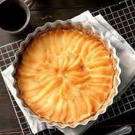

Scandinavian Pear Tart

Description
This luscious dessert combines the flavors of almond,
cinnamon, cardamom, cream cheese, and pear to create
a tart that will not soon be forgotten!
Ingredients
Crust:
- cooking spray
- ½ cup white sugar
- 3 tablespoons butter, softened
- ¾ cup all-purpose flour
- ⅓ cup finely chopped almonds
Filling:
- 1 (8 ounce) package cream cheese, softened
- ¼ cup white sugar
- 1 egg
- ¾ teaspoon almond extract
- 1 (15 ounce) can pears, drained and thinly sliced
Topping:
- 1 tablespoon white sugar
- ¾ teaspoon ground cardamom
- ¼ teaspoon ground cinnamon